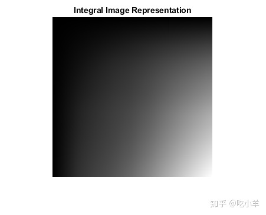
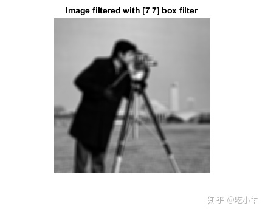
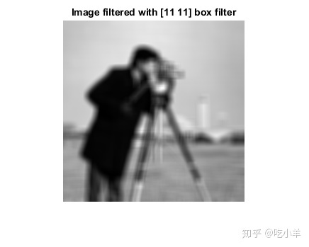
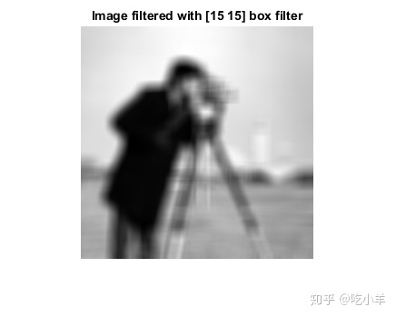

Home
此示例演示如何使用积分图像滤波对图像应用多个大小不同的盒式滤波器。积分图像是一种有用的图像表示方法，可以快速计算局部图像的和。盒滤波器可以看作是每个像素的局部加权和。
将图像读入工作区并显示它。
originalImage = imread('cameraman.tif');
figure
imshow(originalImage)
title('Original Image')
定义三个盒式过滤器的大小。
filterSizes = [7 7;11 11;15 15];
填充图像以适应最大的盒式过滤器的大小。每个维度的填充量等于最大过滤器大小的一半。请注意，使用复制样式填充有助于减少边界瑕疵。
maxFilterSize = max(filterSizes); padSize = (maxFilterSize - 1)/2; paddedImage = padarray(originalImage,padSize,'replicate','both');
使用积分图像函数 integralImage 计算填充图像的积分图像并显示。积分图像是从左到右、从上到下单调不变的。每个像素表示图像中当前像素顶部和左侧的所有像素强度之和。
intImage = integralImage(paddedImage);
figure
imshow(intImage,[])
title('Integral Image Representation')

对积分图像应用三个不同大小的盒式滤波器。 integralBoxFilter 函数可用于将二维盒滤波器应用于图像的积分图像。
filteredImage1 = integralBoxFilter(intImage, filterSizes(1,:)); filteredImage2 = integralBoxFilter(intImage, filterSizes(2,:)); filteredImage3 = integralBoxFilter(intImage, filterSizes(3,:));
integralBoxFilter 函数只返回在没有填充的情况下计算的过滤部分。用不同尺寸的盒形滤波器对同一个积分图像进行滤波，得到不同尺寸的输出。这类似于 conv2函数中的 'valid'选项。
whos filteredImage* Name Size Bytes Class Attributes filteredImage1 264x264 557568 double filteredImage2 260x260 540800 double filteredImage3 256x256 524288 double
因为在计算积分图像之前，图像被填充以容纳最大的盒滤波器，所以没有图像内容丢失。filteredImage1 和 filteredImage2 具有可裁剪的附加填充。
extraPadding1 = (maxFilterSize - filterSizes(1,:))/2;
filteredImage1 = filteredImage1(1+extraPadding1(1):end-extraPadding1(1),...
1+extraPadding1(2):end-extraPadding1(2) );
extraPadding2 = (maxFilterSize - filterSizes(2,:))/2;
filteredImage2 = filteredImage2(1+extraPadding2(1):end-extraPadding2(1),...
1+extraPadding2(2):end-extraPadding2(2) );
figure
imshow(filteredImage1,[])
title('Image filtered with [7 7] box filter')

figure
imshow(filteredImage2,[])
title('Image filtered with [11 11] box filter')

figure
imshow(filteredImage3,[])
title('Image filtered with [15 15] box filter')

======================================================================
我的测试结果及程序
下面是我测试的代码：

注：本文根据MATLAB官网内容修改而成。